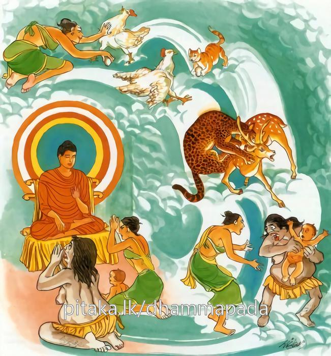

21-2 කුකුළුබිත්තර කෑ දැරිය
මෙම කතාව ධම්මපද අටුවාවෙන් ද කියවන්න.
පරදුක්ඛූපදානෙන අත්තනො සුඛමිච්ඡති
වෙරසංසග්ගසංසට්ඨො වෙරා සො න පරිමුච්චති.
(අනුන් තළා පෙළා ගැති කොට ගෙණ) පරහට දුක් දීමෙන් යමෙක් තමාට සුව කැමැති වේ නම්, හෙ තෙම (බිණුවාහුට පෙරළා බිණීම ය, ගැසුවහුට පෙරළා ගැසීමය යන ආදීන් උනුනට කරණ ලද) වෛර සංසර්ගයෙන් මිශ්ර වූයේ වෛරයෙන් නො මිදෙන්නේ ය. (වෛර වශයෙන් සතතයෙන් දුකට පැමිණෙන්නේ යී සේ යි).

සැවැත් නුවරට නො දුරෙහි පණ්ඩුපුර නම් ගමෙක් වූයේ ය. එහි එක් කෙවුල් මිනිසෙක් වාසය කෙරෙයි. ඔහු එක් දවසක් සැවැත් නුවරට යන ගමනක දී අචිරවතී ගඟබඩනින් කැසුබු බිත්තර කිහිපයක් ගෙණ සැවැත් නුවරට ගොස් එහි ගෙයක රැඳී ඒ බිත්තර තම්බවා කන්නේ එයින් එකක් එහි සිටි දැරියකට ද දුන්නේ ය. ඕ තොමේ එය කෑ තැන පටන් අනික් දැයක් කන්නට නො කැමැති වූවා ය. එහෙයින් ඇයගේ මවු තොමෝ කිකිළියක බිත්තර ලූ තැනකින් බිත්තරයක් ගෙණවුත් ඇයට දුන්නී ය. කුකුළුබිත්තරය කෑ ඕ තොමෝ රසතෘෂ්ණයෙහි බැඳුනී එතැන් පටන් තමා ම ගොස් බිත්තර ගෙණවුත් කන්නී ය. බිත්තර ලන කිකිළිය ද දින පතා බිත්තර ගෙණ යන මැය කෙරෙහි මද හැඟුම් ඇති ව තම බිත්තර ගෙණ ගොස් තම්බා කන මේ දැරිය කෙරෙහි වෛර බැඳ, “මම මැරී ගොස් යකින්නක ව මැයගේ දරුවන් කන්නට පොහොසත් ව උපදිම්වා”යි පතා සිට මැරී ගොස් එම ගෙයි ම බැළල් ව උපන්නී ය. බිත්තර කෑ දැරිය මිය ගොස් එහි ම කිකිළි ව උපන. ගෙයි උපන් ඒ කිකිළිය ලන හැම බිත්තර බැළල අවුත් කන්නී ය. බැළල මෙසේ දෙ තුන් වරක් ම බිත්තර කෑවා ය. ඒ ගමනේ කිකිළිය “තෙ වරක් ම මා දැමූ බිත්තර කෑ මෝ දැන් මාත් මරා කනු කැමැත්තී ය, මෙයින් මැරී ගොස් පැටවුන් සහිත වූ මැය මරා කන්නට මටත් පිළිවන්කම ලැබේවා”යි සිතන්නී මැරී ගොස් ඒ අසල දිවි දෙනක් ව උපන. බැළල ද මිය ගොස් මුවදෙන් ව උපන. මුවදෙන දරුවන් වැදූ කල්හි දිවිදෙන අවුත් පැටවුන් සමග මුවදෙන ද මරා කෑවා ය.
මෙසේ මොවුහු පන් සියයක් අත්බව්හි උනුන් කමින් මරමින් අන්හට දුක් දෙමින් එන්නාහු මේ අත්බවෙහි එකියක් යකින්නක් ව ද එකියක් සැවැත් නුවර කුලදුවක් ව උපන. මේ කතා පුවතෙහි සෙස්ස ප්රථමතරඞ්ගයෙහි සිවුවන කතායෙහි කියූ ලෙසින් දන්නේ ය. මෙහි දී ද බුදුරජානන් වහන්සේ “වෛරය මෛත්රියයෙන් සන්සිඳෙන්නේ ය, වෛරය වෛරයෙන් නො සන්සිඳෙන්නේ ය”යි වදාරා දෙදෙනාහට ම මේ ධර්මදේශනාව කළ සේක.
පරදුක්ඛූපදානෙන අත්තනො සුඛමිච්ඡති,
වෙරසංසග්ගසංසට්ඨො වෙරා සො න පරිමුච්චතීති.
අන්හට දුක් දීමෙන් (යමෙක්) තමාට සුව කැමැති වේ ද, හෙතෙමේ වෛර සංසර්ගයෙන් මිශ්රවූයේ වෛරයෙන් නො මිදෙන්නේ ය.
පරදුක්ඛූපදානෙන අත්තනො සුඛං ඉච්ඡති = අන්හට දුක් දීමෙන් (යමෙක්) තමාට සුව කැමැති ද.
වෙරසංසග්ගසංසට්ඨො වෙරා සො න පරිමුච්චති = හෙතෙමේ වෛරසංසර්ගයෙන් මිශ්ර වූයේ වෛරයෙන් නො මිදෙන්නේ ය.
අන්හට දුක් දීමෙන් යමෙක් මෙලොව සුව විඳුනා කැමැති වේ ද, බැන්නවුනට බැණීමෙන් ඇන්නවුනට ඇණීමෙන් පහරවුනට පැහැරීමෙන් මැරීමෙන් යන මේ ඈලෙසින් උපන් වෛරයෙන් තදබද වූ වෛරයෙන් ඉල්පුනු වෛරයෙන් සැඬ වූ වෛරයෙන් කුළු වූ මිනිස් තෙමේ කවරදාකත් වෛරයෙන් නො ද මිදෙන්නේ ය. වෛරය නිසා හැමදා දුකට වැටෙන්නේ ය. ගින්න දිය ඇති තැනට පැමිණීමෙන් නිවී යන්නා සේ මහත් වූ වෛර ගින්න බුදුරජුන් වෙත පැමිණ නිවී යන්නේ ය.
වෙර නම්: නව ආඝාතවස්තූන් නිසා උනුන්ගේ සිත්තුළ උපදනා සැඬබව ය. ඒ වනාහි දඬු පහර ලත් නයකු සේ අනිටු අරමුණු ලැබීමෙන් සිත කෙලෙසන්නේ ය. [1]
ධර්මදේශනාවගේ අවසානයෙහි යකින්න සරණසීලයෙහි පිහිටා පන්සිල් සමාදන් ව ගෙණ වෛරයෙන් මිදුනා. අන් එකිය ද සෝවන් පලයෙහි පිහිටා ගතු. ධර්මදේශනා තොමෝ පැමිණ සිටි පිරිසට ද වැඩ සහිත වූ ය.
කුක්කුටණ්ඩඛාදිකාවස්තුව නිමි.
-
1-4 ‘න හි වෙරෙන වෙරාති’ යනු බලනු. ↑